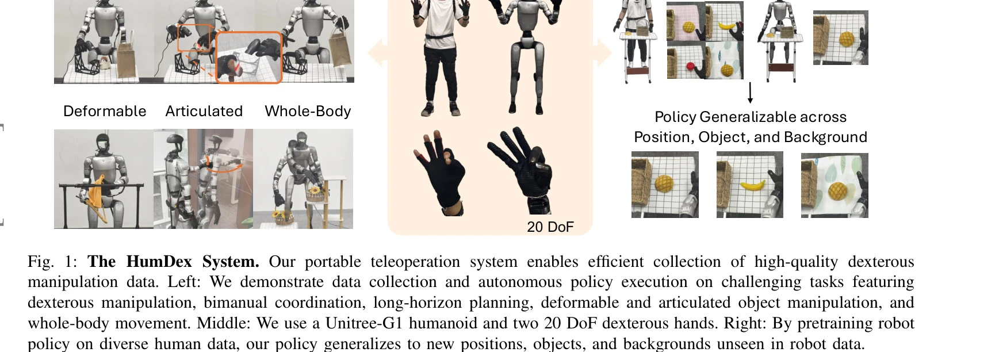
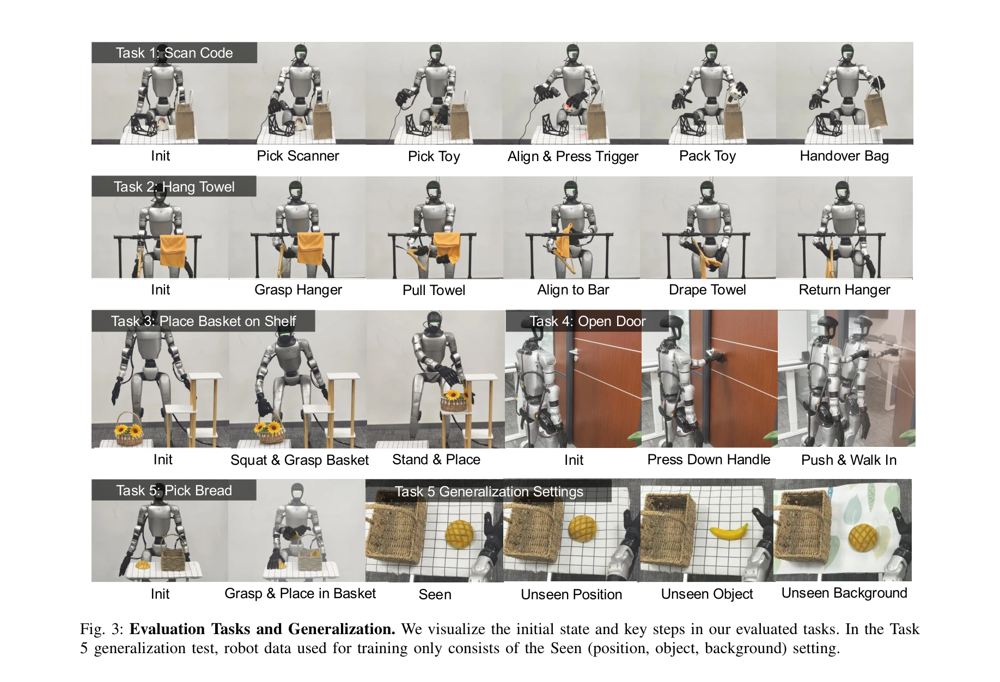
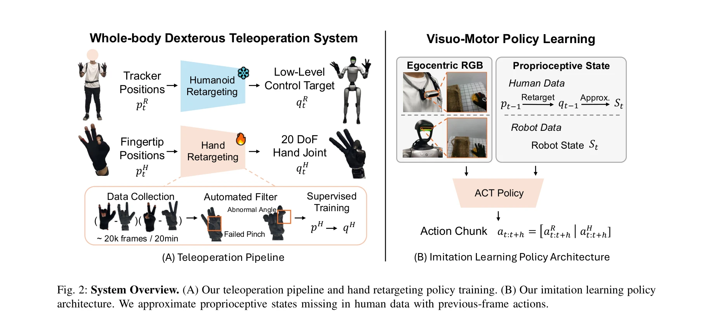

저자: Liang Heng, Yihe Tang, Jiajun Xu, Henghui Bao, Di Huang, Yue Wang | 날짜: 2026-03-12 | URL: https://arxiv.org/abs/2603.12260

Fig. 1: The HumDex System. Our portable teleoperation system enables efficient collection of high-quality dexterous
IMU 기반 모션 트래킹을 활용한 휴머노이드 전신 손재주 조작 텔레오퍼레이션 시스템으로, learning-based hand retargeting과 human 데이터 사전학습을 통해 최소 데이터로 높은 일반화 성능을 달성한다.

Fig. 3: Evaluation Tasks and Generalization. We visualize the initial state and key steps in our evaluated tasks. In the

Fig. 2: System Overview. (A) Our teleoperation pipeline and hand retargeting policy training. (B) Our imitation learning
총평: IMU 기반 휴대용 텔레오퍼레이션과 learning-based hand retargeting, human 데이터 활용의 three-pronged 접근으로 humanoid 손재주 조작 데이터 수집의 오래된 병목을 효과적으로 해결한 높은 수준의 시스템 논문이다. 재현성 높은 설계와 충분한 실험 검증으로 실제 영향력이 클 것으로 예상된다.